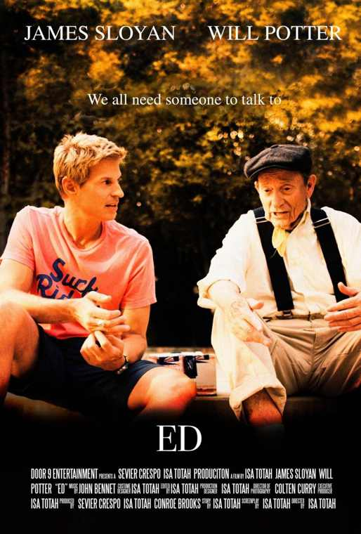
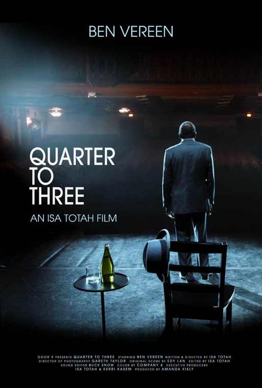
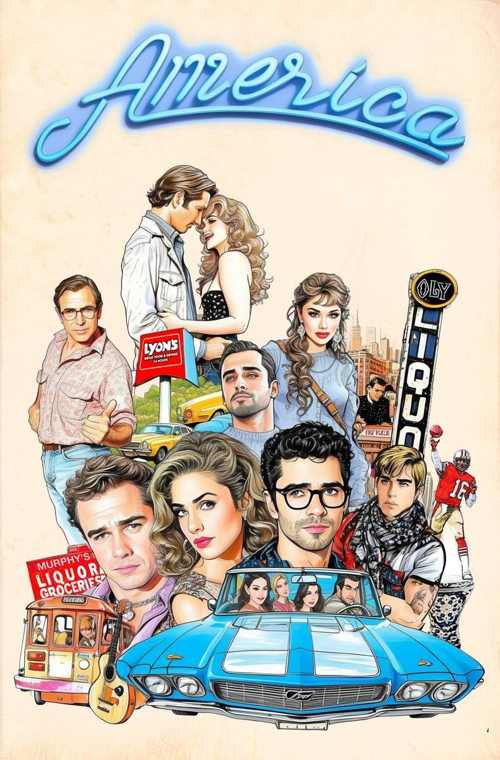
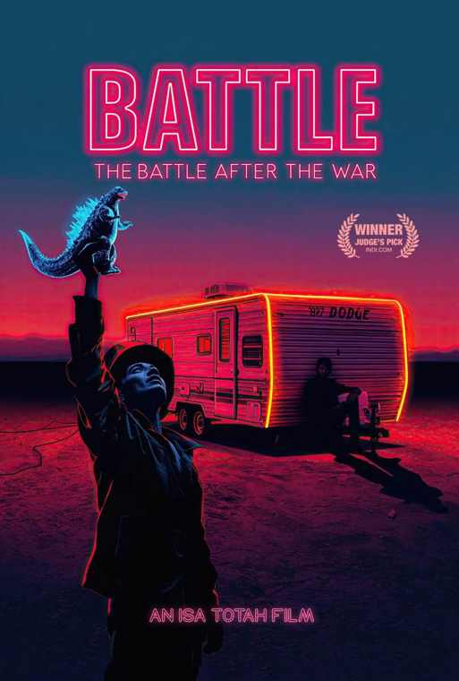
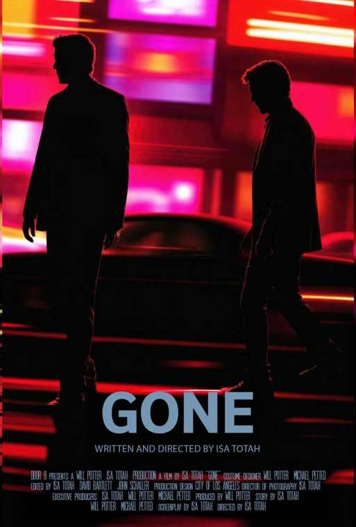

Ed
Feature Film
ISA TOTAH / DIRECTOR
01 / FILM & STORY
Stories about people, relationships, and the search for meaning. Each film looks for the light that persists, even in difficult places.

Feature Film

Feature Film

Film

Film

Film
A selection of films written and/or directed by Isa Totah.